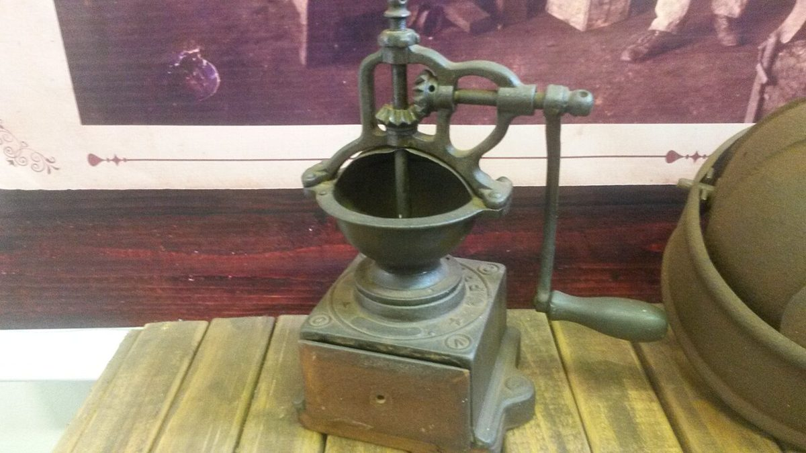
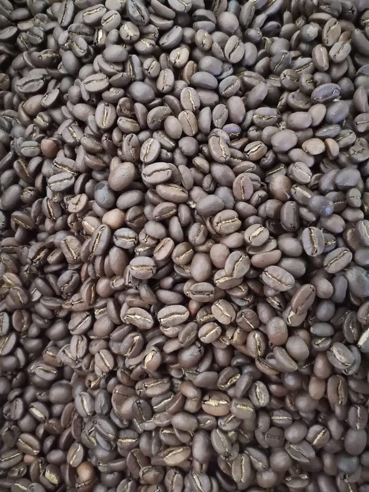

挽き目 2 / 5 ・ 粗挽き
店のこと
確認できているのは、店名・業種・所在地・電話番号・Instagramです。それ以外はお店への確認後に掲載します。

確認済みの情報
- 店名: 自家焙煎コーヒー豆のカフェ holoholo
- 業種: カフェ
- 所在地: 〒849-5251 佐賀県伊万里市大川町大川野2254-1
- 電話: 0955-35-4894
- Instagram: @roast_and_caffe_holoholo
ここに入る予定の文章
お店のこだわり、豆のこと、お店からのメッセージなどは、お店からいただいた内容をもとに掲載します。この試作では、想像で内容を書かないよう空欄にしています。


デザインのテーマについて
各ページの背景の粒は、ミルの挽き目の粗さを表現した飾りです。制作側の連想で、お店の理念・由来とは無関係です。写真もすべてイメージで、お店のものではありません。